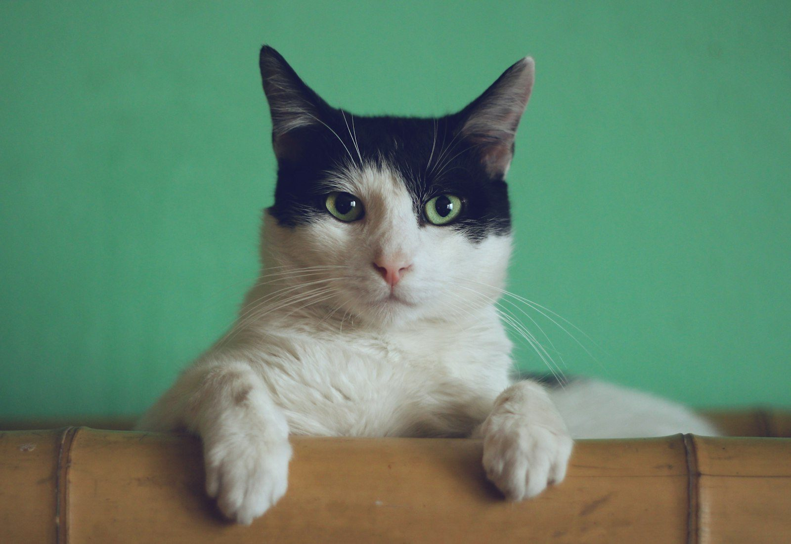
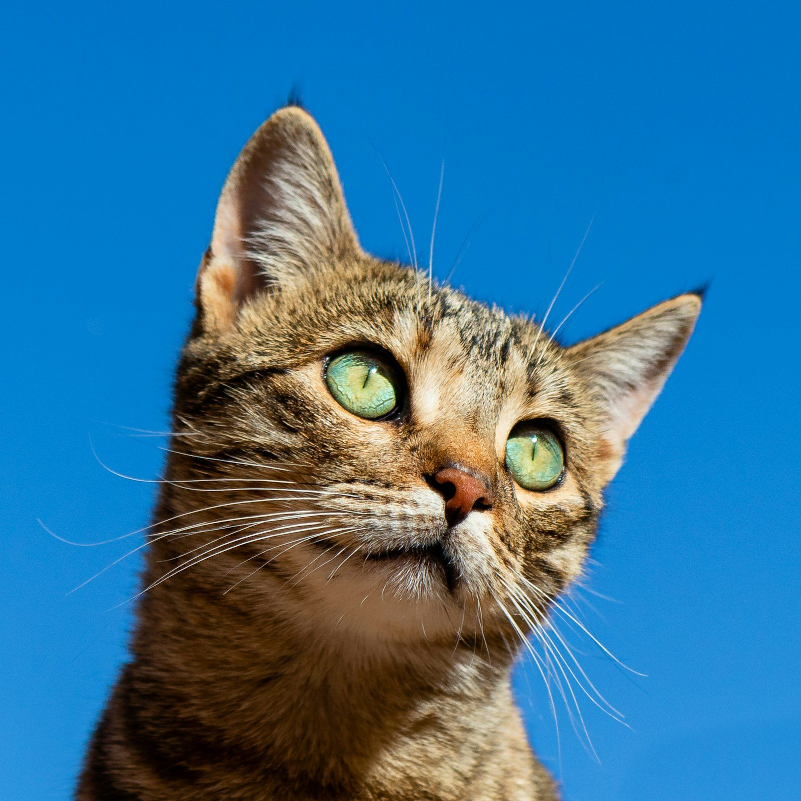

Consulta
Atención veterinaria general para perros y gatos, con un trato que las reseñas describen como amable y honesto.
Consultorio Veterinario Paw Prints en el centro de San Salvador Atenco. Un espacio pequeño y cercano, con 4.2 estrellas y 20 reseñas en Google.


Mosaico con fotos de stock; no son pacientes del consultorio.
El consultorio
The DOGTOR – Paw Prints aparece en Google como consultorio veterinario en Avenida Nacional Sur 123, Centro. Las reseñas hablan de un ambiente bonito, de un veterinario amable y de un lugar limpio y ordenado. También se publica un correo de contacto: mvzpradocarlos@gmail.com.
Qué sí podemos afirmar
Atención veterinaria general para perros y gatos, con un trato que las reseñas describen como amable y honesto.
El consultorio anuncia hospitalización en directorios públicos.
También aparece listada como parte de los servicios del consultorio.
Directorios locales mencionan consulta, vacunación, desparasitación y venta de alimentos para mascotas.
Un plus que sí está documentado
Una reseña de Google señala que el veterinario ofrece servicio a domicilio con su respectiva tarifa, y que es honesto y justo con los precios. Si no puedes llevar a tu mascota, pregúntalo al agendar.

Horario publicado en Google
Conviene revisar este cuadro antes de salir: el consultorio no abre las mismas horas de lunes a domingo.
Algunos directorios muestran un horario corrido de 11:00 a 19:00. Aquí usamos el de la ficha de Google. Confírmalo por WhatsApp, sobre todo si vas por una urgencia: hay reseñas que no lo encontraron abierto a cualquier hora.
Reseñas reales
★★★★★“Excelente atención a los animalitos y también como persona es muy amable el veterinario. Tiene servicio a domicilio con su respectiva tarifa claro. Es honesto y justo con los precios. He rescatado más de 10 perritos en pésimas condiciones y él siempre me los cura muy bien.”
Reseña en Google · diciembre de 2020
★★★★★“Da buena atención y todo se ve limpio y ordenado, me gustó como trataron a mi perro.”
Reseña en Google · septiembre de 2021
★★★★★“Excelente atención a mis mascotas, muy buen médico veterinario. Lo recomiendo ampliamente.”
Reseña en Google · agosto de 2021
★★★★“Excelente servicio, muy bonito ambiente.”
Reseña en Google · julio de 2023
Preguntas
Según Google: lunes 10:00–13:30; martes 9:00–16:00; miércoles y jueves 9:00–20:00; viernes 10:00–14:00; sábado 9:00–21:00; domingo 15:00–18:00. Confírmalo al agendar, porque no es un horario corrido todos los días.
Sí, según una reseña en Google, con una tarifa propia. Pregunta disponibilidad y costo por WhatsApp o al 55 1534 3626.
Avenida Nacional Sur 123, Centro, San Salvador Atenco, C.P. 56300, Estado de México.
Teléfono y WhatsApp: 55 1534 3626. Correo publicado: mvzpradocarlos@gmail.com.
No lo afirmamos. Una reseña indica que, en una emergencia, no lo encontraron abierto a cualquier hora. Lo más seguro es llamar antes de ir.
En fuentes públicas aparecen consulta, hospitalización, limpieza dental, vacunación, desparasitación y alimento para mascotas, además del servicio a domicilio.
En el centro de Atenco
Centro, San Salvador Atenco, 56300, Méx.
55 1534 3626
mvzpradocarlos@gmail.com
| Lunes | 10:00 – 13:30 |
| Martes | 9:00 – 16:00 |
| Miércoles y jueves | 9:00 – 20:00 |
| Viernes | 10:00 – 14:00 |
| Sábado | 9:00 – 21:00 |
| Domingo | 15:00 – 18:00 |